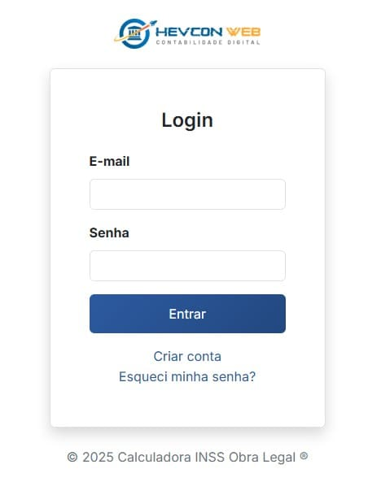
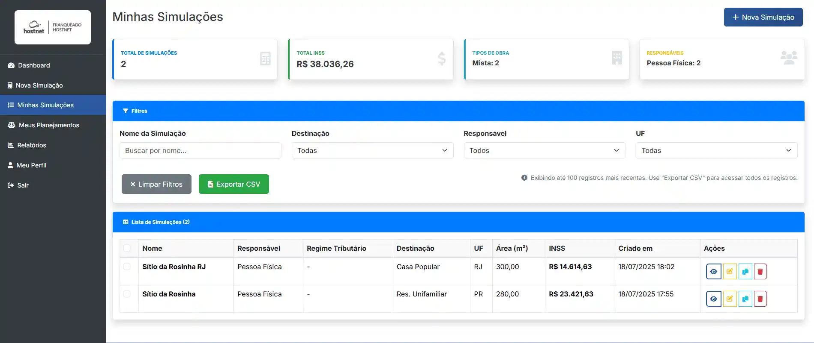
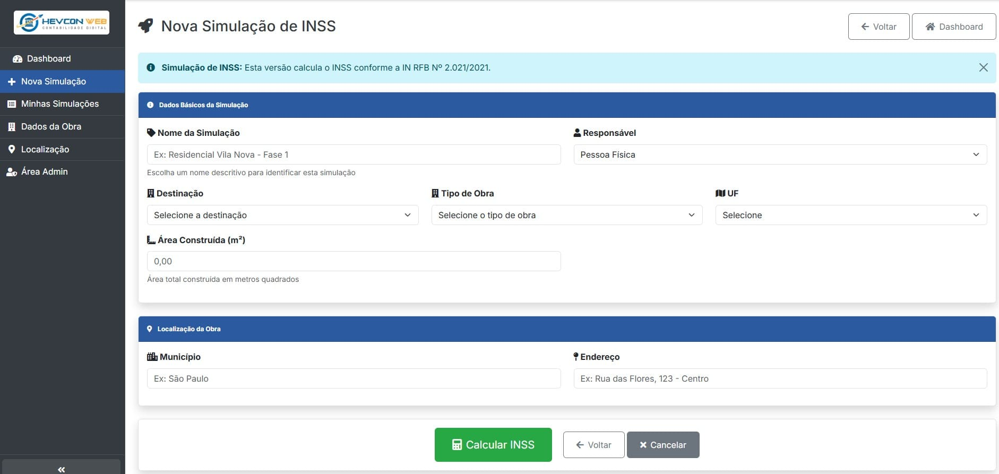
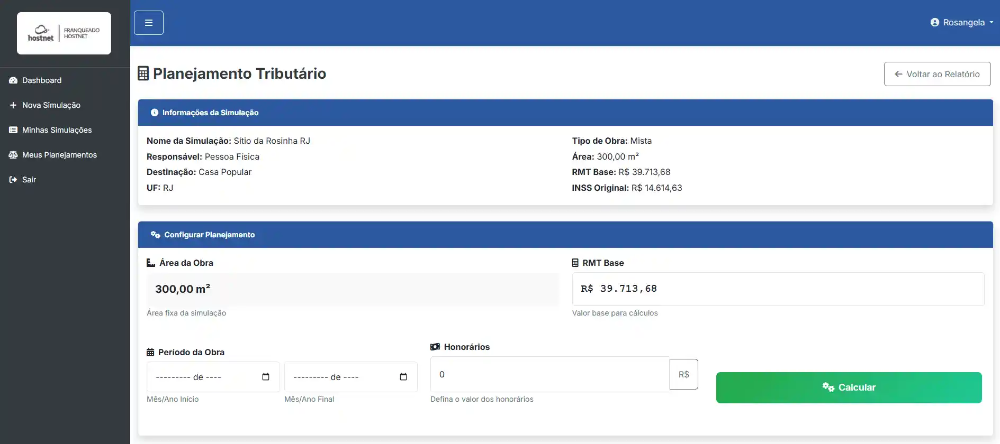
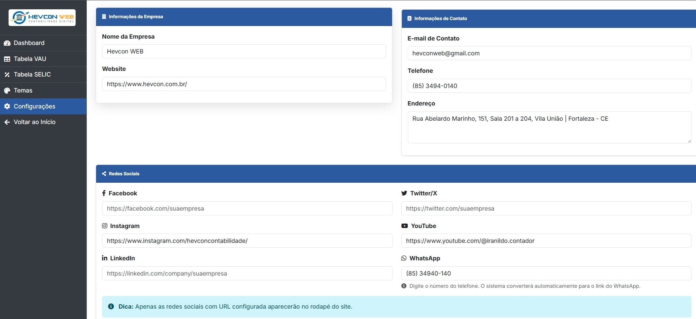
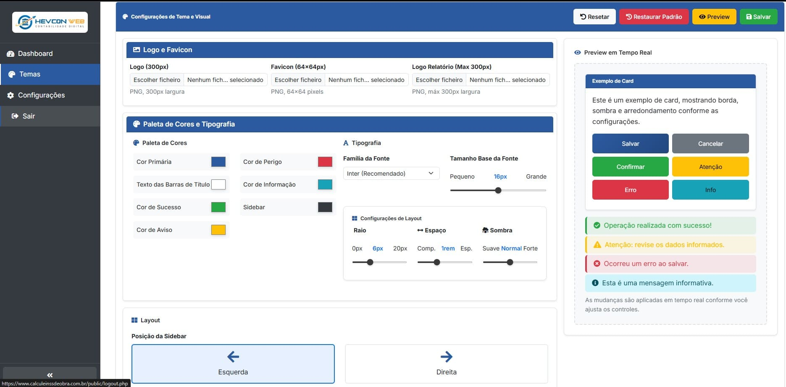
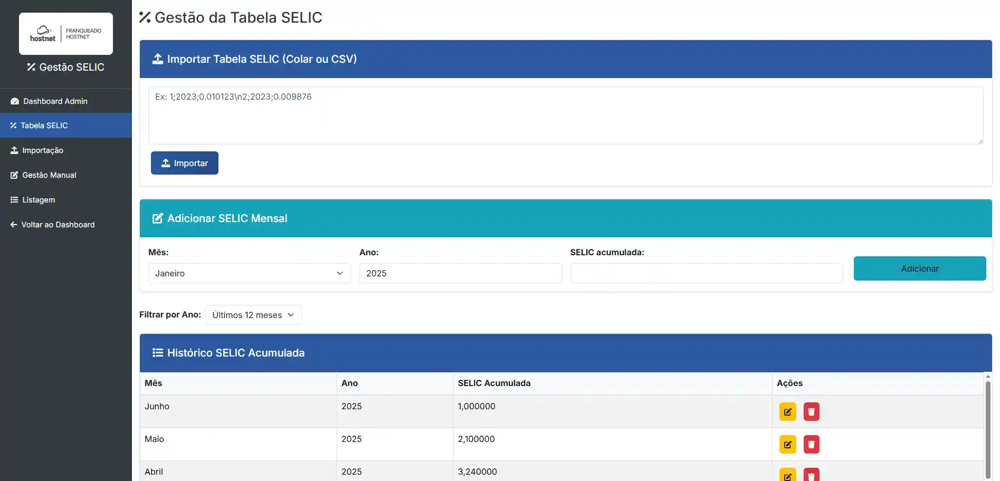
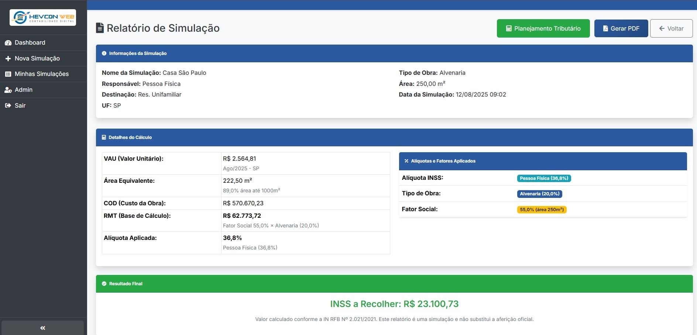
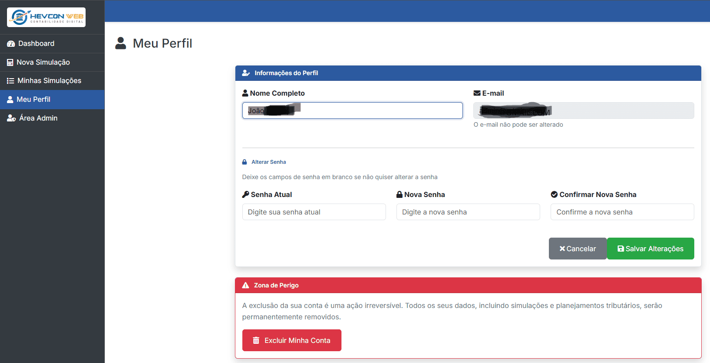

1. Introdução
1.1 Sobre o Sistema
Calculadora INSS Obra Legal ® é uma solução web profissional para simulação de cálculo do INSS em obras civis, especialmente por aferição indireta, conforme a Instrução Normativa RFB nº 2.021/2021. Seu público-alvo são profissionais da construção civil e da área contábil.
O sistema automatiza e profissionaliza o cálculo do INSS devido em obras civis, gera relatórios detalhados prontos para apresentação, e oferece segurança, histórico e facilidade de uso para empresas e contadores.
1.2 Principais Funcionalidades
- Simulação de INSS para obras: O usuário preenche dados da obra e o sistema calcula automaticamente o valor devido.
- Relatórios em PDF: Geração automática de relatórios profissionais e detalhados.
- Histórico de simulações: Registro completo de todas as simulações realizadas, com possibilidade de consulta e reimpressão.
- Exportação de dados: Exportação de simulações em CSV.
- Gestão de usuários: Controle de acesso por categorias (Administrador, Cliente, Lead).
- Personalização visual: Configuração de logo, cores, dados da empresa e tema.
- Segurança: Criptografia, controle de acesso e proteção de dados.
- Acesso móvel: Interface responsiva para uso em computadores, tablets e smartphones.
1.3 Tipos de Usuário
- Administrador: Acesso completo ao sistema, incluindo gestão de usuários e configurações.
- Cliente: Acesso às Simulações e Planejamento Tributário.
- Lead: Acesso limitado às Simulações. Não pode fazer Planejamento Tributário.
1.4 Requisitos do Sistema
- Navegador web moderno (Chrome, Firefox, Safari, Edge)
- Conexão com internet
- JavaScript habilitado
- Pop-ups permitidos (para geração de PDFs)
2. Acesso ao Sistema
2.1 Primeiro Acesso e Cadastro
Exemplo da tela de Login:

- Acesse a tela de cadastro clicando em na tela de login ou acessando diretamente o endereço de cadastro.
- Preencha seu nome, e-mail e senha no formulário de cadastro.
- Confirme o cadastro. Se o e-mail ainda não estiver cadastrado, sua conta será criada automaticamente como Lead.
- Faça login usando o e-mail e senha cadastrados.
Observação: O perfil Lead tem acesso limitado às Simulações e não pode acessar o Planejamento Tributário. Para obter acesso completo, entre em contato com um Administrador do sistema para solicitar a promoção do seu perfil.
2.2 Login Diário
- Acesse a tela de login do sistema.
- Informe seu e-mail e senha cadastrados.
- Clique em para acessar o sistema.
Se ainda não possui conta, clique em para se cadastrar como Lead.
2.3 Perfis de Acesso
- Lead: Pode acessar e realizar Simulações. Não tem acesso ao Planejamento Tributário.
- Cliente: Pode acessar Simulações e Planejamento Tributário.
- Administrador: Tem acesso completo ao sistema, incluindo gestão de usuários e configurações.
Usuários Lead podem ser promovidos a Cliente ou Administrador por um Administrador do sistema.
2.4 Recuperação de Senha
Cenário: Você esqueceu sua senha e não consegue acessar o sistema.
Solução:
- Na tela de login, clique em "Esqueci minha senha" (se disponível) ou entre em contato com o Administrador.
- Siga as instruções para redefinir sua senha.
2.5 Dicas de Segurança
- Use senhas com pelo menos 8 caracteres.
- Combine letras maiúsculas, minúsculas, números e símbolos.
- Não compartilhe sua senha com outros usuários.
- Altere sua senha periodicamente.
2.6 Problemas de Acesso
| Problema | Solução |
|---|---|
| E-mail não reconhecido | Verifique se digitou corretamente ou cadastre-se como novo usuário. |
| Senha incorreta | Use a recuperação de senha ou contate o suporte. |
| Conta bloqueada | Entre em contato com o Administrador do sistema. |
| Página não carrega | Verifique sua conexão com a internet. |
4. Dashboard
4.1 Visão Geral
O Dashboard é a tela inicial do sistema para usuários dos perfis Cliente e Administrador, apresentando um resumo visual das principais informações e métricas.
Usuários do perfil Lead não têm acesso ao Dashboard. Após o login, Leads são direcionados diretamente para a tela de Simulações.
4.2 Cards de Resumo
Os cards de resumo exibem informações relevantes sobre as simulações e obras cadastradas pelo usuário ou pela empresa.
Card "Minhas Simulações":
- Mostra o total de simulações criadas pelo usuário
- Clique para acessar a lista completa
Card "Valor Total INSS":
- Exibe a soma de todos os valores INSS das simulações
- Formato: R$ 0,00
Card "Área Total":
- Mostra a soma das áreas de todas as obras simuladas
- Formato: 0,00 m²
Card "Destinação Mais Comum":
- Indica o tipo de obra mais frequente nas simulações
- Exemplos: Residencial, Comercial, Industrial
4.3 Gráficos
Os gráficos do Dashboard ajudam a visualizar tendências e distribuições das simulações realizadas.
Gráfico de Linha - Simulações por Mês:
- Mostra a evolução das simulações nos últimos 6 meses
- Passe o mouse sobre os pontos para ver detalhes
- Útil para identificar tendências e sazonalidade
Gráfico de Pizza - Destinações:
- Distribuição das simulações por tipo de destinação
- Cores diferentes para cada categoria
- Percentual de cada tipo
5. Minhas Simulações
5.1 Visão Geral
A tela "Minhas Simulações" é o centro de controle para gerenciar todas as simulações criadas pelo usuário. Nela, você encontra cards de resumo, filtros avançados, exportação de dados e uma tabela detalhada com todas as suas simulações.
Exemplo da tela Minhas Simulações:

5.2 Cards de Resumo
- Total de Simulações: Mostra o número total de simulações criadas.
- Total INSS: Soma de todos os valores de INSS das simulações.
- Tipos de Obra: Quantidade de simulações por tipo de obra.
- Responsáveis: Quantidade de simulações por tipo de responsável.
5.3 Filtros e Exportação
- Filtros por Nome da Simulação, Destinação, Responsável e UF.
- Busca por nome com atualização automática.
- Botão para resetar todos os campos.
- Botão para baixar todas as simulações filtradas.
- Exibe até 100 registros mais recentes na tela. Use a exportação CSV para acessar todos os registros.
5.4 Tabela de Simulações
- Tabela com as colunas: Nome, Responsável, Regime Tributário, Destinação, UF, Área (m²), INSS, Criado em, Ações.
- Seleção múltipla de simulações para ações em massa (exclusão).
- Mensagem amigável quando não há simulações cadastradas.
- Botão para criar uma nova simulação a qualquer momento.
5.5 Ações Disponíveis
- Visualizar: Abre o relatório da simulação.
- Editar: Permite modificar os dados da simulação.
- Duplicar: Cria uma cópia da simulação.
- Excluir: Remove a simulação (com confirmação).
- PDF: Gera o relatório da simulação em PDF (ícone de documento na coluna Ações).
5.6 Dicas de Uso
- Use nomes descritivos para facilitar a busca e organização das simulações.
- Utilize os filtros para encontrar rapidamente simulações específicas.
- Para acessar todas as simulações, utilize a exportação CSV.
6. Validação de Dados
6.1 Visão Geral
O sistema possui validação automática de dados em tempo real, garantindo a integridade e precisão das informações inseridas.
6.2 Tipos de Validação
Validação de Campos Obrigatórios:
- Nome da Simulação: Campo obrigatório, não pode estar vazio
- Responsável: Deve ser "Pessoa Física" ou "Pessoa Jurídica"
- Destinação: Deve ser selecionada da lista disponível
- Tipo de Obra: Deve ser "Alvenaria", "Madeira" ou "Mista"
- UF: Deve ter exatamente 2 caracteres
- Área Construída: Deve ser um número maior que zero
Validação de Regras de Negócio:
- Regime Tributário: Obrigatório para Pessoa Jurídica
- Área Mínima: Deve ser superior a 0 m²
- UF Válida: Deve ser uma das 27 unidades federativas
- Data de Referência: Para cálculo correto do VAU
6.3 Mensagens de Erro
| Campo | Erro | Solução |
|---|---|---|
| Responsável | "Responsável deve ser 'Pessoa Física' ou 'Pessoa Jurídica'" | Selecione uma das opções disponíveis |
| Regime Tributário | "Regime Tributário é obrigatório para Pessoa Jurídica" | Selecione Simples Nacional, Lucro Presumido ou Lucro Real |
| Tipo de Obra | "Tipo de obra deve ser 'Alvenaria', 'Madeira' ou 'Mista'" | Escolha o tipo correto da obra |
| UF | "UF deve ter 2 caracteres" | Selecione uma UF válida da lista |
| Área | "Área construída deve ser um número maior que zero" | Digite um valor positivo (ex: 150.50) |
| Destinação | "Destinação é obrigatória" | Selecione uma destinação da lista |
6.4 Validação em Tempo Real
Durante o Preenchimento:
- Campos obrigatórios são destacados em vermelho se vazios
- Validação de formato para campos numéricos
- Verificação de dependências entre campos
- Feedback visual imediato
Na Submissão:
- Validação completa de todos os campos
- Lista de erros exibida no topo do formulário
- Campos com erro são destacados
- Formulário não é enviado até corrigir todos os erros
6.5 Dicas de Preenchimento
Para Evitar Erros:
- Nome Descritivo: Use nomes que identifiquem claramente a obra
- Área Precisa: Use valores com até 2 casas decimais
- UF Correta: Confirme a UF onde a obra será executada
- Destinação Adequada: Escolha a que melhor representa o uso da obra
Campos Opcionais:
- Município: Preencha para melhor identificação
- Endereço: Útil para relatórios e documentação
7. Nova Simulação
7.1 Visão Geral
A tela de Nova Simulação permite que qualquer usuário autenticado crie uma simulação de INSS para uma obra, preenchendo os dados necessários para o cálculo automático.
Exemplo da tela de Nova Simulação:

7.2 Como Preencher a Simulação
- Responsável: Selecione se a obra é de Pessoa Física ou Jurídica.
- Nome da Simulação: Dê um nome descritivo para identificar a simulação.
- Destinação: Escolha o tipo de destinação da obra (ex: Casa Popular, Comercial, etc.).
- Tipo de Obra: Selecione entre Alvenaria, Madeira ou Mista.
- UF: Escolha a unidade federativa onde a obra está localizada.
- Área (m²): Informe a área construída da obra.
- Município: (Opcional) Informe o município da obra.
- Endereço: (Opcional) Informe o endereço da obra.
- Regime Tributário: (Aparece apenas para Pessoa Jurídica) Selecione o regime tributário aplicável.
7.3 Funcionalidades
- Validação automática dos campos obrigatórios e regras de negócio.
- Após o envio, o sistema calcula o INSS automaticamente e redireciona para o relatório da simulação.
- É possível duplicar uma simulação existente, o que pré-preenche os campos do formulário para facilitar a criação de simulações semelhantes.
8. Planejamento Tributário
8.1 Visão Geral
O Planejamento Tributário é uma funcionalidade avançada que permite analisar diferentes cenários de pagamento do INSS, considerando fatores como multas, juros e parcelamento, conforme a legislação vigente.
8.2 Critérios de Avaliação
- Fator de Ajuste: Percentual aplicado sobre o valor original do INSS para simular descontos ou condições especiais.
- Pessoa Física/Jurídica: O cálculo considera o tipo de responsável pela obra, aplicando regras específicas para cada caso.
- Área da Obra: Considera a área construída informada na simulação.
- Data de Referência: Utiliza a data da simulação para aplicar o VAU e regras vigentes.
- VAU: Valor atualizado conforme tabelas oficiais para o período da simulação.
8.3 Cálculo de Multas, Juros e Correção Monetária
- Multa por Atraso: Percentual aplicado sobre o valor devido, conforme legislação (ex: 20% após 30 dias de atraso).
- Juros de Mora: Calculados mensalmente sobre o valor devido, conforme taxa vigente (ex: 1% ao mês ou fração).
- Correção Monetária: Utiliza a taxa SELIC acumulada do período entre o vencimento e o pagamento.
8.4 Dicas de Uso
- Compare diferentes fatores de ajuste para avaliar o impacto de descontos ou condições especiais.
- Considere o prazo de pagamento para entender o impacto de multas e juros.
- Documente suas análises para manter o histórico de decisões.
- Consulte um especialista em casos complexos ou dúvidas sobre a legislação.
8.5 Limitações
- Os valores apresentados são simulações e não garantias legais.
- A legislação pode ser alterada, afetando os cálculos.
- O usuário é responsável por validar as informações antes de tomar decisões.
8.1 Preenchendo os Dados do Planejamento Tributário
Ao acessar o módulo de Planejamento Tributário, os seguintes dados da simulação selecionada já estarão exibidos automaticamente e não podem ser alterados nesta tela:
- Nome da Simulação
- Responsável (Pessoa Física)
- Destinação
- UF
- Tipo de Obra
- Área (m²)
- RMT Base (Remuneração da Mão de Obra Total, calculada automaticamente)
- INSS Original (calculado automaticamente)
O usuário deve preencher ou ajustar os seguintes campos para realizar o planejamento tributário detalhado:
- Período da Obra: Informe o mês/ano de início e o mês/ano de término da obra utilizando os campos de data.
- Honorários: Informe o valor dos honorários. Por padrão, o campo aceita valores em reais (R$). Se preferir informar um percentual (%), clique no botão ao lado do campo para alternar entre R$ e %. O sistema irá considerar o valor conforme a opção selecionada no momento do cálculo.
Após preencher os campos acima, clique em para gerar o planejamento detalhado.
Exemplo da tela de preenchimento dos dados iniciais:

10. Administração
10.1 Visão Geral
O painel administrativo é acessível apenas para usuários com perfil de administrador e permite o gerenciamento completo do sistema.
10.2 Funcionalidades do Painel Administrativo
- Cards de Resumo: Exibe total de simulações, total de usuários ativos, valor total de INSS e novas simulações nos últimos 7 dias.
- Gráficos e Estatísticas: Visualize novos usuários e simulações por mês, top 5 UFs, distribuição por faixa de área e por destinação.
- Gerenciamento de Usuários: Listar, ativar/desativar, promover/demitir administradores, excluir usuários.
- Gerenciamento de Simulações: Listar, buscar e excluir simulações de qualquer usuário.
- Acesso à Tabela VAU e Tabela SELIC: Gerencie os valores de referência utilizados nos cálculos.
- Configurações do Sistema: Personalize informações institucionais, contatos, redes sociais e preferências do sistema.
- Retorno ao Dashboard: Acesse rapidamente o dashboard principal do sistema.
11. Configurações do Sistema
11.1 Visão Geral
A tela de Configurações do Sistema permite personalizar informações institucionais, dados de contato e redes sociais que aparecem em relatórios e no sistema.
Exemplo da tela de Configurações do Sistema:

11.2 Informações da Empresa
Nome da Empresa:
- Função: Nome que aparece nos relatórios e cabeçalhos
- Formato: Texto livre
- Exemplo: "Calculadora INSS Obra Legal ®"
- Impacto: Aparece em PDFs e tela de login
Website:
- Função: URL do site da empresa
- Formato: URL válida (ex: https://www.empresa.com.br)
- Uso: Links em relatórios e rodapés
- Opcional: Pode ficar em branco
11.3 Informações de Contato
E-mail de Contato:
- Função: E-mail principal para contato
- Formato: E-mail válido
- Uso: Aparece em relatórios e páginas de suporte
- Exemplo: contato@empresa.com.br
Telefone:
- Função: Número de telefone para contato
- Formato: Texto livre (aceita formatação)
- Exemplo: (11) 99999-9999
- Uso: Relatórios e páginas de contato
Endereço:
- Função: Endereço físico da empresa
- Formato: Texto livre (múltiplas linhas)
- Uso: Relatórios e documentação
- Exemplo: Rua das Flores, 123 - Centro - São Paulo/SP
11.4 Redes Sociais
Facebook:
- Função: Link para página do Facebook
- Formato: URL completa
- Exemplo: https://facebook.com/suaempresa
Instagram:
- Função: Link para perfil do Instagram
- Formato: URL completa
- Exemplo: https://instagram.com/suaempresa
LinkedIn:
- Função: Link para página do LinkedIn
- Formato: URL completa
- Exemplo: https://linkedin.com/company/suaempresa
Twitter/X:
- Função: Link para perfil do Twitter/X
- Formato: URL completa
- Exemplo: https://twitter.com/suaempresa
YouTube:
- Função: Link para canal do YouTube
- Formato: URL completa
- Exemplo: https://youtube.com/@suaempresa
11.5 Como Salvar Configurações
Processo de Salvamento:
- Preencha os campos desejados
- Clique em "Salvar Todas"
- Aguarde a confirmação de salvamento
- As alterações são aplicadas imediatamente
Validação:
- E-mails: Devem ter formato válido
- URLs: Devem começar com http:// ou https://
- Campos obrigatórios: Nome da empresa
11.6 Impacto das Configurações
Onde Aparecem:
- Relatórios PDF: Cabeçalho e rodapé
- Tela de Login: Nome da empresa
- Páginas do Sistema: Informações de contato
- E-mails: Assinatura automática
Dicas de Uso:
- Mantenha Atualizado: Revise periodicamente
- Verifique Links: Teste URLs das redes sociais
- Use Informações Reais: Evite dados fictícios
- Padronize Formato: Mantenha consistência
12. Temas e Visual
12.1 Visão Geral
A tela de Temas e Visual permite personalizar completamente a aparência do sistema, incluindo cores, fontes, logos e layout.
Exemplo da tela de Temas e Visual:

12.2 Logo e Favicon
Logo Principal (300px):
- Função: Logo que aparece no cabeçalho do sistema
- Formato: PNG
- Tamanho: 300px de largura (altura proporcional)
- Uso: Sidebar, cabeçalhos e relatórios
- Dica: Use fundo transparente para melhor resultado
Favicon (64x64px):
- Função: Ícone que aparece na aba do navegador
- Formato: PNG
- Tamanho: 64x64 pixels
- Uso: Identificação visual do sistema
Logo para Relatórios (500-600px):
- Função: Logo de alta qualidade para PDFs
- Formato: PNG
- Tamanho: 500-600px de largura
- Uso: Relatórios em PDF
- Dica: Use alta resolução para impressão
12.3 Paleta de Cores
Cor Primária:
- Função: Cor principal do sistema
- Impacto: Botões, cabeçalhos, links
- Padrão: #2c5aa0 (azul)
- Dica: Escolha uma cor que represente sua marca
Texto das Barras de Título:
- Função: Cor do texto nos cabeçalhos dos cards
- Impacto: Títulos de seções e cards
- Padrão: #ffffff (branco)
- Dica: Deve contrastar com a cor primária
Cores de Status:
- Sucesso: Verde (#28a745) - operações bem-sucedidas
- Aviso: Amarelo (#ffc107) - alertas e avisos
- Perigo: Vermelho (#dc3545) - erros e exclusões
- Informação: Azul claro (#17a2b8) - mensagens informativas
Sidebar:
- Função: Cor de fundo do menu lateral
- Padrão: #212529 (cinza escuro)
- Dica: Use cor escura para melhor contraste
12.4 Tipografia
Família da Fonte:
- Inter (Recomendado): Fonte moderna e legível
- Segoe UI: Fonte padrão do Windows
- Roboto: Fonte do Google, muito legível
- Open Sans: Fonte aberta, boa para web
Tamanho Base da Fonte:
- Controle: Slider de 12px a 20px
- Padrão: 16px
- Impacto: Tamanho base de todo o texto
- Dica: 16px é ideal para leitura na tela
12.5 Configurações de Layout
Raio das Bordas:
- Controle: Slider de 0px a 20px
- Padrão: 6px
- Impacto: Arredondamento de cards e botões
- Dica: Valores maiores criam visual mais suave
Espaçamento:
- Controle: Slider de 0.5rem a 2rem
- Padrão: 1rem
- Impacto: Espaçamento interno dos elementos
- Dica: Mais espaço cria visual mais arejado
Sombras:
- Controle: Slider de 0 a 2 (Suave a Forte)
- Padrão: Normal
- Impacto: Profundidade dos elementos
- Dica: Sombras suaves criam elegância
12.6 Posição da Sidebar
Esquerda (Padrão):
- Layout: Menu lateral à esquerda
- Vantagem: Padrão web, familiar aos usuários
- Ideal para: Maioria dos casos
Direita:
- Layout: Menu lateral à direita
- Vantagem: Diferencial visual
- Ideal para: Sistemas específicos ou preferência
12.7 Preview em Tempo Real
Funcionalidades:
- Atualização Instantânea: Mudanças aparecem imediatamente
- Exemplo de Card: Mostra cores, bordas e sombras
- Botões de Exemplo: Todas as cores de status
- Alertas: Mensagens de exemplo
Como Usar:
- Ajuste as cores e veja o resultado no preview
- Teste diferentes fontes e tamanhos
- Experimente com raio de borda e sombras
- Compare antes e depois das mudanças
12.8 Ações Disponíveis
Resetar:
- Função: Volta às configurações da sessão atual
- Uso: Quando quer desfazer mudanças não salvas
- Impacto: Não salva no sistema
Restaurar Padrão:
- Função: Volta às configurações originais do sistema
- Uso: Quando quer começar do zero
- Impacto: Remove todas as personalizações
- Atenção: Ação irreversível
Preview:
- Função: Abre nova aba com preview completo
- Uso: Para ver como ficará em tela cheia
- Vantagem: Visualização mais ampla
Salvar:
- Função: Salva todas as configurações
- Uso: Após finalizar as personalizações
- Impacto: Aplicado imediatamente em todo o sistema
12.9 Dicas de Personalização
Para Melhor Resultado:
- Mantenha Consistência: Use cores que combinem
- Teste Contrastes: Garanta legibilidade
- Use Logos de Qualidade: Evite imagens pixeladas
- Considere a Marca: Alinhe com identidade visual
Combinações Recomendadas:
- Profissional: Azul (#2c5aa0) + Cinza (#6c757d)
- Moderno: Verde (#28a745) + Branco (#ffffff)
- Elegante: Roxo (#6f42c1) + Dourado (#ffc107)
- Corporativo: Azul escuro (#1e3a5f) + Cinza claro (#f8f9fa)
Limitações:
- Apenas Administradores: Acesso restrito
- Alterações Globais: Afetam todos os usuários
- Compatibilidade: Teste em diferentes navegadores
- Performance: Muitas cores podem afetar velocidade
13. SELIC
13.1 Visão Geral
A tela de administração da SELIC permite que administradores importem, cadastrem, editem e excluam os valores mensais da taxa SELIC acumulada, utilizada nos cálculos de correção monetária do sistema.
Importante: A tabela SELIC acumulada deve ser baixada do site oficial da Receita Federal: https://sicalc.receita.economia.gov.br/sicalc/selic/consulta
13.2 Funcionalidades
- Importação de Dados: Importe a tabela SELIC colando dados no formato texto ou via arquivo CSV. O sistema aceita formatos horizontal (anos na primeira linha, meses nas linhas seguintes) e vertical (blocos de ano + 12 valores).
- Gestão Manual: Adicione, edite ou exclua registros de SELIC mensal informando mês, ano e valor acumulado. A edição é feita clicando no botão de lápis ao lado do registro desejado.
- Filtro por Ano: Filtre a listagem para exibir apenas um ano específico ou os últimos 12 meses.
- Listagem: Visualize todos os registros cadastrados em uma tabela com colunas: Mês, Ano, SELIC Acumulada e Ações (editar/excluir).
- Navegação: Acesse rapidamente o Dashboard Admin, Importação, Gestão Manual, Listagem e volte ao Dashboard principal.
13.3 Exemplo da Tela SELIC

14. Relatórios
14.1 Visão Geral
O sistema permite gerar relatórios detalhados de simulações, incluindo dados de INSS, multas, juros e parcelamentos.
Exemplo da tela de Relatórios:

14.2 Tipos de Relatórios
Relatório de Simulação:
- Dados: Todos os dados da simulação (INSS, multas, juros, parcelas)
- Formato: PDF/A (padrão para arquivamento)
- Uso: Documentação oficial de cálculo
Relatório de Planejamento:
- Dados: Cenários de pagamento (à vista, parcelado, com atraso)
- Formato: PDF/A
- Uso: Análise de custos
Relatório de Integração:
- Dados: Informações de INSS, VAU, RMT, etc.
- Formato: PDF/A
- Uso: Documentação de integração
14.3 Como Gerar Relatórios
Passo a Passo:
- Acesse a simulação desejada
- Clique em "Gerar PDF" ou "Exportar" no menu lateral
- Escolha o formato (PDF/A ou CSV)
- Aguarde o download do arquivo
14.4 Personalização de Relatórios
Opções de Formato:
- PDF/A: Padrão para arquivamento, maior segurança
- PDF/U: Padrão para web, mais leve
- CSV: Dados tabulares, fácil de importar
Opções de Conteúdo:
- Todos os Dados: Inclui INSS, multas, juros, parcelas
- Dados Detalhados: Mostra cálculos passo a passo
- Apenas Resumo: Apenas valores finais
Opções de Layout:
- Padrão: Layout tradicional
- Compacto: Menos espaço, mais informações
- Personalizado: Pode ser definido nas configurações
14.5 Dicas de Uso
Para Melhor Organização:
- Nomeie os Relatórios: Identifique claramente o conteúdo
- Armazene em Pastas: Mantenha organizado
- Mantenha Histórico: Guarde versões anteriores
Limitações:
- Apenas Administradores: Acesso restrito
- Tamanho do Arquivo: Relatórios grandes podem ser pesados
- Compatibilidade: Teste em diferentes navegadores
15. Perfil do Usuário
15.1 Visão Geral
A tela de Perfil do Usuário permite que você edite suas informações pessoais e de acesso.
Exemplo da tela de Perfil do Usuário:

15.2 Informações Pessoais
Nome:
- Função: Nome completo do usuário
- Formato: Texto livre
- Exemplo: João Silva
- Impacto: Aparece em relatórios e no menu
E-mail:
- Função: Endereço de e-mail para contato e recuperação de senha
- Formato: E-mail válido
- Exemplo: joao.silva@empresa.com.br
- Impacto: Uso obrigatório para login
Senha:
- Função: Segurança da conta
- Formato: Mínimo 8 caracteres, combinação de letras, números e símbolos
- Exemplo: J@n3Silva123
- Impacto: Proteção da conta
15.3 Como Editar Perfil
Passo a Passo:
- Clique em "Perfil" no menu lateral
- Preencha os campos desejados
- Clique em "Salvar Alterações"
- Aguarde a confirmação de salvamento
15.4 Dicas de Segurança
Para Proteger sua Conta:
- Senha Forte: Use combinações de caracteres
- Altere Regularmente: Sempre que possível
- Não Compartilhe: Mantenha sua senha em sigilo
Limitações:
- Apenas Administradores: Acesso restrito
- Compatibilidade: Teste em diferentes navegadores
16. Resolução de Problemas
16.1 Visão Geral
Aqui estão algumas soluções comuns para problemas que você pode encontrar.
16.2 Problemas de Acesso
Login:
- Verifique suas credenciais: E-mail e senha devem estar corretos.
- Use a recuperação de senha: Se esqueceu a senha, clique em "Esqueci minha senha".
- Verifique a conexão: Tenha uma boa conexão com a internet.
Conta Bloqueada:
- Entre em contato com o suporte: Se sua conta foi bloqueada, entre em contato com o administrador.
- Verifique a data: Pode haver um limite de tempo para acesso.
16.3 Problemas de Simulação
Dados Incorretos:
- Valide os dados: Use a validação em tempo real e a lista de erros.
- Preencha corretamente: As datas devem ser futuras ou presentes, os valores devem ser positivos.
Relatórios Não Geram:
- Verifique a conexão: Tenha uma boa conexão com a internet.
- Permita pop-ups: O navegador deve permitir pop-ups para gerar PDFs.
- Tente novamente: Se o problema persistir, tente novamente mais tarde.
16.4 Problemas de Configurações
Alterações Não Refletem:
- Recarregue a página: Limpe o cache do navegador (F5).
- Limpe o cache do navegador: No menu lateral, clique em "Configurações do Sistema" e depois em "Limpar Cache".
Configurações Não Salvas:
- Clique em "Salvar Todas": Ao editar configurações, clique em "Salvar Todas" para confirmar.
- Verifique a conexão: Tenha uma boa conexão com a internet.
16.5 Problemas de Integração
Relatórios SELIC Não Importam:
- Verifique o formato: Use arquivos CSV (.csv) ou Excel (.xlsx) com colunas de mês/ano e taxa.
- Tamanho do Arquivo: Arquivos grandes podem demorar para importar.
Relatórios eSocial/SERO Não Geram:
- Verifique a conexão: Tenha uma boa conexão com a internet.
- Permita pop-ups: O navegador deve permitir pop-ups para gerar PDFs.
17. Suporte
17.1 Visão Geral
Se você encontrar um problema que não está resolvido nas seções anteriores, entre em contato com o suporte.
17.2 Como Contatar o Suporte
E-mail:
- Suporte: feliciano.filho@hostnet.com.br
- Atendimento: 24 horas por dia, 7 dias por semana
- Resposta Rápida: Garantimos uma resposta em até 24 horas úteis
Telefone:
- Suporte WhatsApp: (85) 99768-3014
- Atendimento: Exclusivo por mensagem, não atendemos ligações
- Resposta Rápida: Garantimos uma resposta em até 24 horas úteis
17.3 Documentação
Manual do Usuário:
- Este manual: Fornece orientações detalhadas sobre todas as funcionalidades.
- Atualizado Regularmente: Mantenha-se atualizado consultando este manual.
Política de Privacidade:
- Disponível: Acesse a política de privacidade no rodapé da página.
- Protege seus dados: Saiba como seus dados são tratados.
Termos de Uso:
- Disponível: Acesse os termos de uso no rodapé da página.
- Entenda os limites: Saiba quais são seus direitos e deveres.
18. Perguntas Frequentes (FAQ)
18.1 Acesso e Login
Q: Esqueci minha senha, o que faço?
A: Use a opção "Esqueci minha senha" na tela de login. Você receberá instruções por e-mail para redefinir a senha.
Q: Minha conta foi bloqueada, como desbloquear?
A: Entre em contato com o administrador do sistema ou suporte técnico.
Q: Posso acessar de qualquer dispositivo?
A: Sim, desde que tenha conexão com a internet e um navegador moderno.
18.2 Simulações
Q: Como criar uma nova simulação?
A: Acesse "Nova Simulação" no menu lateral e preencha os dados obrigatórios.
Q: Posso editar uma simulação já criada?
A: Sim, acesse "Minhas Simulações" e clique em "Editar" na simulação desejada.
Q: Como duplicar uma simulação?
A: Em "Minhas Simulações", clique em "Duplicar" na simulação desejada.
Q: Posso excluir uma simulação?
A: Sim, mas a exclusão é permanente. Use com cuidado.
18.3 Relatórios e PDFs
Q: Como gerar um relatório em PDF?
A: Acesse a simulação desejada e clique em "Gerar PDF" ou "Exportar".
Q: O PDF não está gerando, o que faço?
A: Verifique se o navegador permite pop-ups e se há conexão com a internet.
Q: Posso personalizar o relatório?
A: Sim, nas configurações do sistema você pode incluir logo e personalizar textos.
18.4 Temas e Visual
Q: Como alterar as cores do sistema?
A: Acesse "Temas e Visual" no menu e use os seletores de cor.
Q: As alterações não aparecem, o que faço?
A: Recarregue a página (F5) ou limpe o cache do navegador.
Q: Posso voltar ao visual original?
A: Sim, use o botão "Restaurar Padrão" em "Temas e Visual".
18.5 SELIC
Q: Como importar dados SELIC?
A: Acesse "SELIC" no menu, clique em "Importar" e selecione o arquivo.
Q: Que formato de arquivo é aceito?
A: Arquivos CSV (.csv) ou Excel (.xlsx) com colunas de mês/ano e taxa.
Q: Posso editar dados SELIC?
A: Sim, clique em "Editar" na linha desejada da tabela.
18.6 Configurações
Q: Como alterar dados da empresa?
A: Acesse "Configurações do Sistema" no menu e edite os campos desejados.
Q: As alterações aparecem em todas as telas?
A: Sim, as alterações são refletidas automaticamente em todo o sistema.
Q: Posso alterar meu e-mail?
A: Sim, acesse "Perfil" no menu e clique em "Editar" no campo e-mail.
19. Glossário
19.1 Termos Técnicos
INSS:
Instituto Nacional do Seguro Social. Sistema de previdência social brasileiro.
SELIC:
Sistema Especial de Liquidação e Custódia. Taxa básica de juros da economia brasileira.
Simulação:
Cálculo estimado de valores INSS para uma obra específica.
Planejamento Tributário:
Análise e otimização de aspectos tributários de uma operação.
Dashboard:
Tela inicial do sistema com resumo de informações e métricas.
Sidebar:
Menu lateral de navegação do sistema.
Breadcrumb:
Navegação hierárquica no topo das páginas.
PDF:
Portable Document Format. Formato de arquivo para documentos.
CSV:
Comma-Separated Values. Formato de arquivo para dados tabulares.
19.2 Termos do Sistema
Usuário:
Pessoa que acessa o sistema com credenciais específicas.
Administrador:
Usuário com permissões especiais para gestão do sistema.
Cliente:
Tipo de usuário com acesso completo às simulações.
Lead:
Tipo de usuário com acesso limitado para visualização.
Simulação:
Registro de cálculo INSS para uma obra específica.
Planejamento:
Registro de análise tributária.
Relatório:
Documento gerado com dados do sistema.
Tema:
Configuração visual personalizada do sistema.
Configuração:
Parâmetro ajustável do sistema.
Filtro:
Critério para limitar resultados de busca.
19.3 Abreviações
- INSS: Instituto Nacional do Seguro Social
- SELIC: Sistema Especial de Liquidação e Custódia
- PDF: Portable Document Format
- CSV: Comma-Separated Values
- FAQ: Frequently Asked Questions (Perguntas Frequentes)
- URL: Uniform Resource Locator
- IP: Internet Protocol
Conclusão
Este manual abrange todas as funcionalidades do sistema Calculadora INSS Obra Legal, fornecendo orientações detalhadas para usuários de todos os níveis.
Para obter o máximo do sistema:
- Leia atentamente cada seção
- Pratique as funcionalidades
- Use as dicas de usabilidade
- Mantenha dados organizados
- Entre em contato com o suporte quando necessário
O sistema está em constante evolução. Novas funcionalidades e melhorias são implementadas regularmente. Mantenha-se atualizado consultando este manual periodicamente.